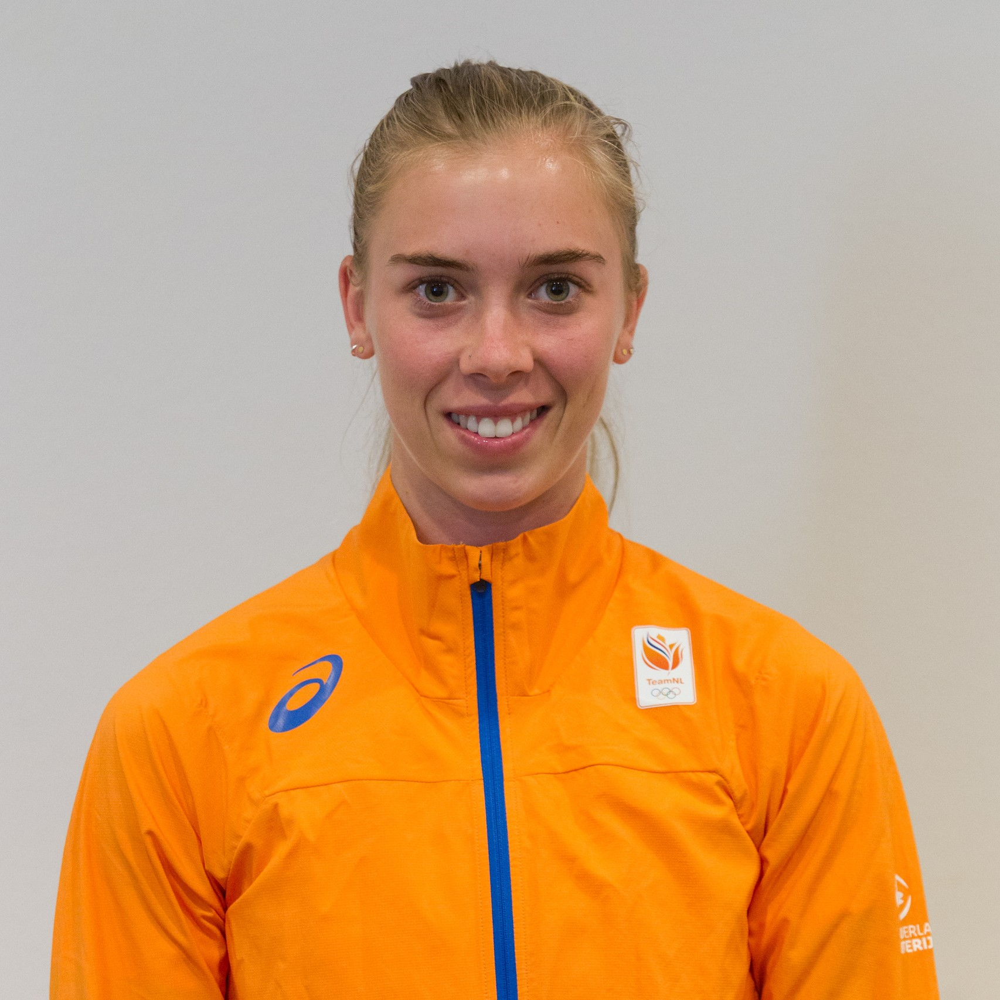

| Name |
Anna Sjoukje Runia |
| Date of birth, |
19 feb 1995 |
| Length |
1.69m |
| Weight |
58kg |
| Residence |
Miami, FL (USA) |
| Club |
SAV, Grootebroek |
| Discipline |
Sprints, hurdles |
| Coach |
Rogier Ummels, Amy Deem |
| Profession |
Athlete |
| Support |
University of Miami |

Ambition
Short term: Make the team for World Championships, stay healthy, qualify for internation championships
Long term: Keep developing, staying injury free, Olympic games Tokyo 2020 and perform at international championships
Academics
Currently I am in my 4th year of my BFA in graphic design at the University of Miami.
About
I’ve been running track since I was 7 years old. I’ve always been a short sprinter/hurdler. In 2015 I moved to the United states to join the University of Miami track team. In 2017 I made the switch from the short sprints to the long sprints
and hurdles.